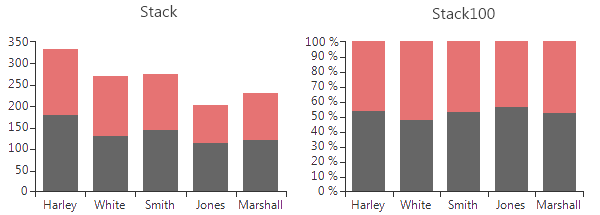

Bar
BarSeries are used to visualize data points as bar blocks where the height of each bar denotes the magnitude of its value.
As a descendant of Categorical series, Bars require one categorical and one numerical axis. The following snippet demonstrates
how to manually populate two BarSeries:
__[C#] __
BarSeries barSeries = new BarSeries("Performance", "RepresentativeName");
barSeries.Name = "Q1";
barSeries.DataPoints.Add(new CategoricalDataPoint(177, "Harley"));
barSeries.DataPoints.Add(new CategoricalDataPoint(128, "White"));
barSeries.DataPoints.Add(new CategoricalDataPoint(143, "Smith"));
barSeries.DataPoints.Add(new CategoricalDataPoint(111, "Jones"));
barSeries.DataPoints.Add(new CategoricalDataPoint(118, "Marshall"));
this.radChartView1.Series.Add(barSeries);
BarSeries barSeries2 = new BarSeries("Performance", "RepresentativeName");
barSeries2.Name = "Q2";
barSeries2.DataPoints.Add(new CategoricalDataPoint(153, "Harley"));
barSeries2.DataPoints.Add(new CategoricalDataPoint(141, "White"));
barSeries2.DataPoints.Add(new CategoricalDataPoint(130, "Smith"));
barSeries2.DataPoints.Add(new CategoricalDataPoint(88, "Jones"));
barSeries2.DataPoints.Add(new CategoricalDataPoint(109, "Marshall"));
this.radChartView1.Series.Add(barSeries2);
__[VB.NET] __
Dim barSeries As New Telerik.WinControls.UI.BarSeries("Performance", "RepresentativeName")
barSeries.Name = "Q1"
barSeries.DataPoints.Add(New CategoricalDataPoint(177, "Harley"))
barSeries.DataPoints.Add(New CategoricalDataPoint(128, "White"))
barSeries.DataPoints.Add(New CategoricalDataPoint(143, "Smith"))
barSeries.DataPoints.Add(New CategoricalDataPoint(111, "Jones"))
barSeries.DataPoints.Add(New CategoricalDataPoint(118, "Marshall"))
Me.RadChartView1.Series.Add(barSeries)
Dim barSeries2 As New Telerik.WinControls.UI.BarSeries("Performance", "RepresentativeName")
barSeries2.Name = "Q2"
barSeries2.DataPoints.Add(New CategoricalDataPoint(153, "Harley"))
barSeries2.DataPoints.Add(New CategoricalDataPoint(141, "White"))
barSeries2.DataPoints.Add(New CategoricalDataPoint(130, "Smith"))
barSeries2.DataPoints.Add(New CategoricalDataPoint(88, "Jones"))
barSeries2.DataPoints.Add(New CategoricalDataPoint(109, "Marshall"))
Me.RadChartView1.Series.Add(barSeries2)

BarSeries could be customized using the following properties:
ShowLabels – a Boolean property that indicates whether
the labels of each bar should be displayed.
The specific position of the labels is determined by the orientation (vertical
or horizontal) and the CombineMode (None, Cluster, Stack, Stack100) of the bars.CombineMode – a common property for all categorical series,
which introduces a mechanism for combining data points that reside in different
series but have the same category. The combine mode can be
None, Cluster,
Stack and Stack100.
None means that the series will be plotted independently of each other,
so that they are overlapping. Cluster displays data points in the same category
huddled close together. Stack plots the points on top of
each other and Stack100
will display the value as percent. The combine mode is best described by a picture
(Left - Stack, Right – Stack100):
GapLength – a property exposed by both CategoricalAxis
and DateTimeContinuousAxis, which controls the distance between bar groups as
percent. Note that the value should be between 0 and 1, where a value of 0 means
that a bar would take the entire space between two ticks, while a value of 1 means
the bar will have zero width as all the space should appear as gap. Here is how to
set the GapLength:
__[C#] __
(barSeries.HorizontalAxis as CategoricalAxis).GapLength = 0.75;
__[VB.NET] __
TryCast(barSeries.HorizontalAxis, CategoricalAxis).GapLength = 0.75
The following image demonstrates how different values of the GapLength property
change the BarSeries:

-
StackGroupKey all cartesian series that support stacking can be grouped in separate stacks.
Here are four BarSeries stacked into two groups:
 To achieve this add four BarSeries and set the StackGroupKey property of two of them to 1.
To achieve this add four BarSeries and set the StackGroupKey property of two of them to 1.